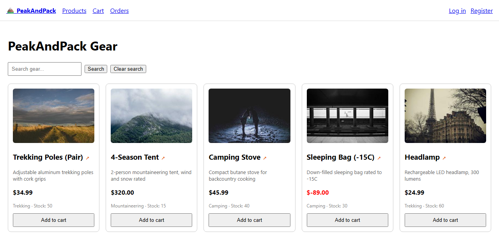

Playwright: Zero to Architect
A complete Playwright series for anyone starting from zero. No prior automation experience needed. By Phase 15 you will have the skills to design, build, and lead a Playwright test suite at an architect level.
1. What this series is
Each phase teaches one concept, applies it to a real app, and leaves you with a working file.
The series is designed to be read in order: locators (Phase 2) assume the test-design thinking from Phase 1, page objects (Phase 9) assume everything from Phases 1 through 8. But every phase also stands on its own if you need to jump to a specific topic.
The series moves in four deliberate stages, from writing a single reliable test to leading a whole suite as a team asset.
| Movement | What you learn | Phase | Phase name |
|---|---|---|---|
| 1: Test Design Thinking | What to test, how to find elements, assert outcomes, wait correctly, and debug failures. | 0 | Intro & Setup |
| 1 | Test Design Thinking | ||
| 2 | Locators | ||
| 3 | Assertions & Waits | ||
| 4 | Debugging & Flakiness | ||
| 2: Production-Quality Tests | Tests that work in CI, across parallel workers, and against real authenticated sessions. | 5 | Test Data & State |
| 6 | Authentication & Sessions | ||
| 7 | API Testing | ||
| 8 | Advanced Scenarios | ||
| 3: Expert Automation Design | Architect a suite that scales: page objects, fixtures, visual regression, CI, flaky test management. | 9 | Page Object Model |
| 10 | Fixtures & Config | ||
| 11 | Visual Regression | ||
| 12 | CI/CD & Flaky Tests | ||
| 4: Mastery Through Practice | AI as a reviewer, team-level automation leadership, six capstone projects. | 13 | AI-Assisted Automation |
| 14 | Automation Leadership | ||
| 15 | Capstone Projects |
2. The demo app: PeakAndPack
Every phase is applied to PeakAndPack, a lightweight e-commerce app with login, a product listing, a cart, and a checkout flow. It is purpose-built for this series: enough complexity to teach every concept without a domain that gets in the way of the learning.

PeakAndPack is live at peakandpack-ui.onrender.com. You do not need to run it locally. It stays the same across all phases so the tests you write in Phase 0 are still valid in Phase 15.
PeakAndPack has real, live bugs, on purpose. A negative price, a discount code that gives 100% off instead of 10%, an authorization gap between users' order histories. These aren't simulated for the exercises, they're actual defects in the running app, seeded so that a correct test genuinely fails against it and a superficial one gives false confidence. Several phases reference these by bug ID as you go.
3. Who this is for
- Manual QA engineers moving into automation.
- Developers who want structure behind a test suite that scales.
- Light Playwright users who want the gaps filled: page objects, fixtures, CI.
- Experienced automation engineers: skip to Phase 9 for the architect-level material.
No prerequisite series. If you've never used Git before, the Git for QA primer is a five-minute read that covers everything Phase 0 assumes.
Written by RN · The Quality Strategist · Playwright: Zero to Architect